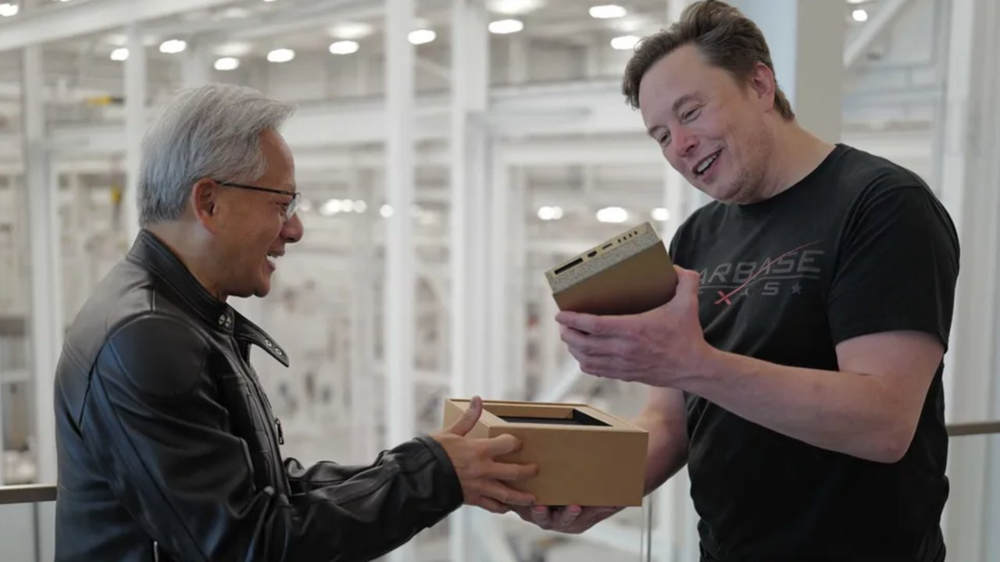

Technology
Jensen Huang to join SpaceX after abrupt Nvidia exit
Elon Musk confirmed the move Thursday, hours after Huang stepped down as chief executive of the world's most valuable chipmaker.
MH
Marcus Hale
Nov. 12, 2026, 7:31 AM PST · 3 min read

Former Nvidia CEO Jensen Huang will join SpaceX to lead the company's AI computing efforts, Elon Musk said Thursday, calling the hire "an honor."
Huang resigned earlier in the day as Nvidia's chief executive, president and board member. CFO Colette Kress is serving as interim CEO while the board searches for a permanent replacement.
Musk did not say what title Huang would hold, or when he would start. A SpaceX spokesperson declined to comment further.